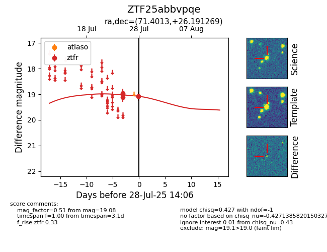

Target ZTF25abbvpqe at 2025-07-28 14:06, see:
FINK: fink-portal.org/ZTF25abbvpqe
Lasair: lasair-ztf.lsst.ac.uk/objects/ZTF25abbvpqe
ALeRCE: alerce.online/object/ZTF25abbvpqe
alt names
ZTF25abbvpqe (ztf,fink)
coordinates:
equatorial (ra, dec) = (71.4013,+26.19127)
galactic (l, b) = (174.5472,-12.44591)
photometry
last ztfr=19.08
4 ztfr detections
